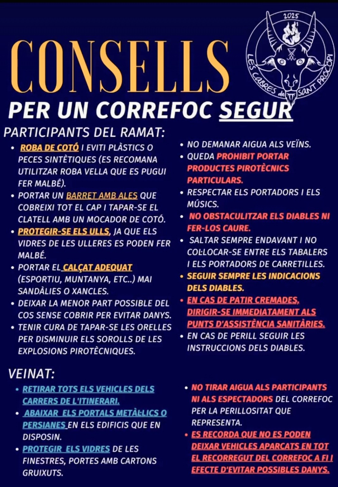

ROBA DE COTÓ
Eviti plàstics o peces sintètiques. Es recomana utilitzar roba vella que es pugui fer malbé.
CONSELLS PER A UN CORREFOC SEGUR
La seguretat és responsabilitat de tots. Respecta les indicacions dels diables, dels portadors i de l'organització durant tot el correfoc.
Eviti plàstics o peces sintètiques. Es recomana utilitzar roba vella que es pugui fer malbé.
Portar un barret amb ales que cobreixi tot el cap i tapar-se el clatell amb un mocador de cotó.
Protegir-se els ulls, ja que els vidres de les ulleres es poden fer malbé.
Portar el calçat adequat, esportiu, de muntanya, etc. Mai sandàlies o xancletes.
Deixar la menor part possible del cos sense cobrir per evitar danys.
Tenir cura de tapar-se les orelles per disminuir els sorolls de les explosions pirotècniques.
No demanar aigua als veïns.
Queda prohibit portar productes pirotècnics particulars.
Respectar els portadors i els músics.
No obstaculitzar els diables ni fer-los caure.
Saltar sempre endavant i no col·locar-se entre els tabalers i els portadors de carretil les.
Seguir sempre les indicacions dels diables.
En cas de patir cremades, dirigir-se immediatament als punts d'assistència sanitària.
En cas de perill, seguir les instruccions dels diables.
Retirar tots els vehicles dels carrers de l'itinerari.
Abaixar els portals metàl·lics o persianes en els edificis que en disposin.
Protegir els vidres de les finestres i portes amb cartons gruixuts.
No tirar aigua als participants ni als espectadors del correfoc per la perillositat que representa.
Es recorda que no es poden deixar vehicles aparcats en tot el recorregut del correfoc a fi efecte d'evitar possibles danys.
Respecta els participants, els músics, els diables i el veïnat. Segueix sempre les indicacions durant el recorregut.
